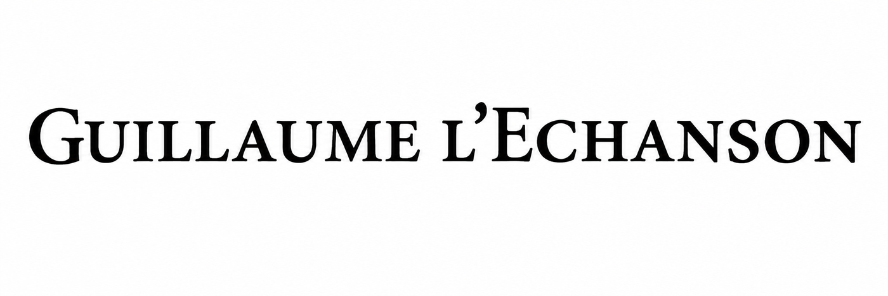
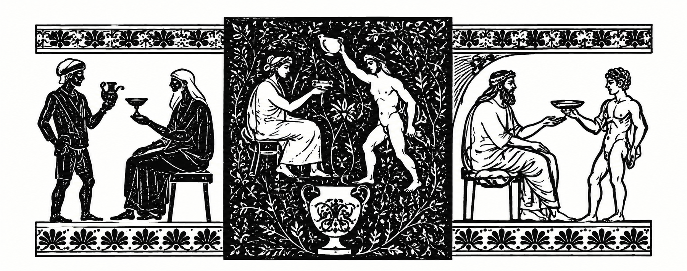

Vigneron — Chassagne-Montrachet, Bourgogne

D'ancien sommelier à vigneron : des vins d'auteur, vivants, pensés comme un service — le vin que l'on tend, avec soin, à qui sait l'accueillir.

L'échanson : dans l'Antiquité, celui qui servait le vin aux tables des grands.
La Biodynamie
Le sol, la lune, les préparations : la philosophie qui guide le travail à la vigne et au chai.
Lire la page →Le Reportage
Vendanges, foulage, élevage : les étapes d'un millésime racontées en images.
Suivre les étapes →